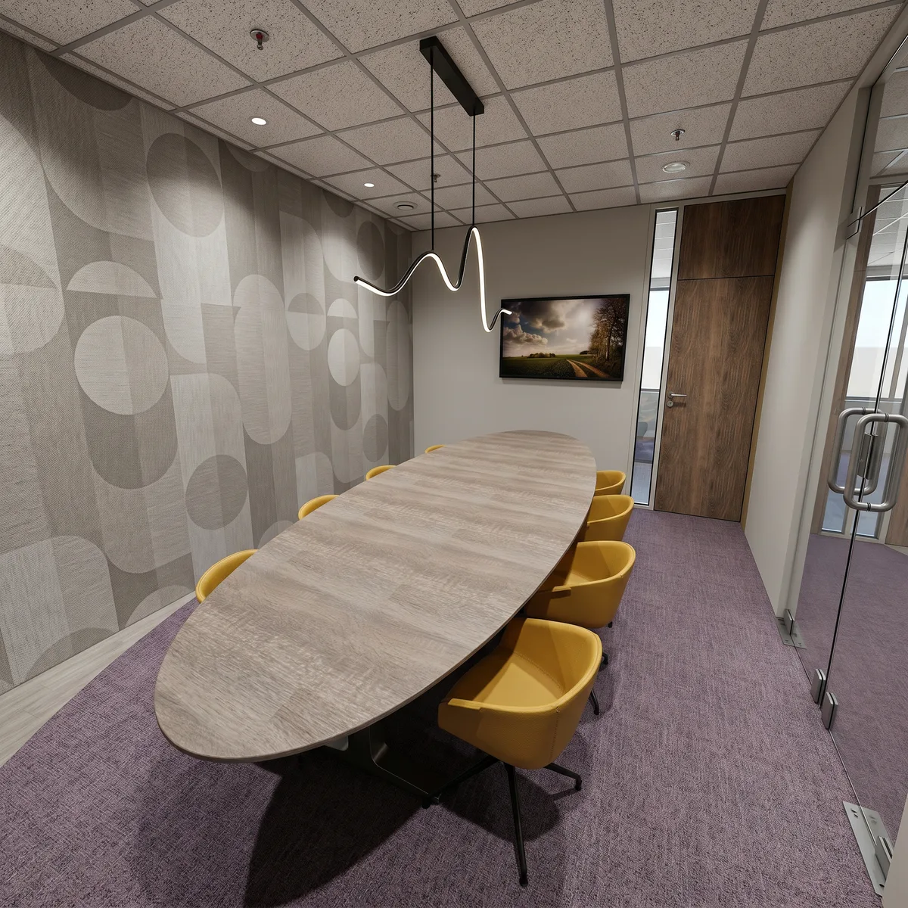

Kantoor verhuizen
Een nieuw pand.
Een goed begin.
Een verhuizing begint vóór de inrichting. We brengen jullie werkdag, ruimtebehoefte en plannen bij elkaar, zodat het nieuwe kantoor kan passen bij hoe jullie werken en waar jullie naartoe willen.
Kennismaken
De aanleiding
Verhuizen is ook opnieuw kijken.
Jullie groeien, kiezen een andere locatie of willen het kantoor laten aansluiten op een nieuwe koers. Dan gaat het niet alleen om hoeveel bureaus er passen, maar ook om focus, overleg, ontmoeting en ontvangst.
Door die wensen vroeg te bespreken, geven we de zoektocht en het ontwerp een gezamenlijk vertrekpunt.
Vóór de pandkeuze
Wat moet de nieuwe plek mogelijk maken?
Hoeveel mensen zijn tegelijk aanwezig? Welke werkzaamheden vragen een eigen ruimte? En wat verwachten jullie van de groei van het team? Die vragen helpen om een beoogd pand te beoordelen.
- Werkplekgebruik en piekbezetting
- Ruimte voor focus, overleg en ontmoeting
- Indelingsmogelijkheden, daglicht en akoestiek
- Ontvangst, merkuitstraling en comfort
- Randvoorwaarden, budget en gewenste verhuisdatum
Onbekende gegevens blijven aandachtspunten. Een eerste verkenning vervangt geen bouwkundige of contractuele beoordeling door de betreffende specialist.
Een pand op het oog
Past dit pand bij jullie bedrijf?
De Locatiescan helpt jullie de kansen, risico’s en open vragen op een rij te zetten voordat jullie een locatie vastleggen. Denk aan werkplekgebruik, groei, uitstraling en comfort.
Start de Locatiescan →Liever samen naar de mogelijkheden kijken? Je kunt rechtstreeks kennismaken.
Voorbereiden
Breng ruimte, planning en budget samen.
Een nieuwe indeling hangt samen met de mogelijkheden van het pand. We bespreken welke aanpassingen nodig zijn, welk meubilair kan meeverhuizen en wat moet worden aangevuld.
We stemmen ontwerpbesluiten en uitvoering af op jullie gewenste verhuisdatum. Levertijden, werkzaamheden van andere partijen en de beschikbaarheid van het pand nemen we mee als afhankelijkheden.
De opdracht, planning en rolverdeling leggen we vooraf vast.
Pand gekozen
Nu richting geven aan het interieur.
Met een gekozen locatie en concrete plannen kunnen we het kennismakingsgesprek gericht voorbereiden. De projectintake verzamelt jullie wensen, gebruik, planning en randvoorwaarden.
Start de Projectscan →Bekijk kantoorontwerp →De aanpak
Van jullie werkdag naar een nieuw kantoor.
We bepalen samen de uitgangspunten. Daarna werk ik indeling, materiaal, kleur, licht en meubilair uit binnen de afgesproken opdracht. 3D-visualisaties maken het voorstel zichtbaar voordat de uitvoering begint.
Bij de realisatie stem ik binnen mijn afgesproken rol af met aannemers en specialisten. Zo blijven ontwerpkeuzes ook tijdens de uitvoering bespreekbaar.
Bekijk mijn werkwijze →Uit de praktijk
Nieuw beginnen bij Ebenau BV.
We verhuizen en willen het meteen goed aanpakken.
Verder lezen
Eerst de juiste vragen stellen.
Wat moet je weten voordat je een nieuw kantoorpand huurt? Een passend kennisartikel helpt om de locatiekeuze verder voor te bereiden.
Waar moet je op letten vóór je een nieuw kantoorpand huurt? →